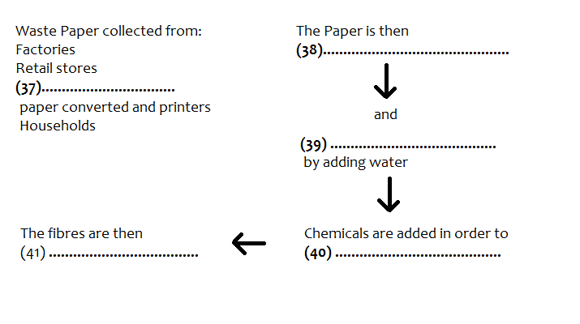

Questions 30-36
Complete the summary below of the first two paragraphs of the Reading
Passage.
Choose ONE OR TWO WORDS from the Reading Passage for each answer.
Write your answers in boxes 30-36 on your answer sheet.
SUMMARY
Example ....
From the point of view of recycling, paper has two
advantages over minerals and ...........oil..........
in that firstly it comes from a
resource which is ........ (30) ........ and secondly, it is less threatening to our
environment when we throw it away because it is ....... (31) ...... Although Australia's record
in the re-use of waste paper is good, it is still necessary to use a combination of recycled fibre and ........
(32) ........ to make new paper. The paper industry has contributed positively and people have also
been encouraged by .........(33) ......... to collect their waste on a regular basis. One major
difficulty is the removal of ink from used paper but ......... (34) ......... are being made in
this area. However, we need to learn to accept paper which is generally of a lower ......... (35)
......... than before and to sort our waste paper by removing ......... (36)
........ before discarding it for collection.
Look at paragraphs C, D, and E and, using the information in the passage, complete the flow chart below. Write your answers in boxes 37-41 on your answer sheet. Use ONE OR TWO WORDS for each answer.

Click the button to Show/ Hide Answers.